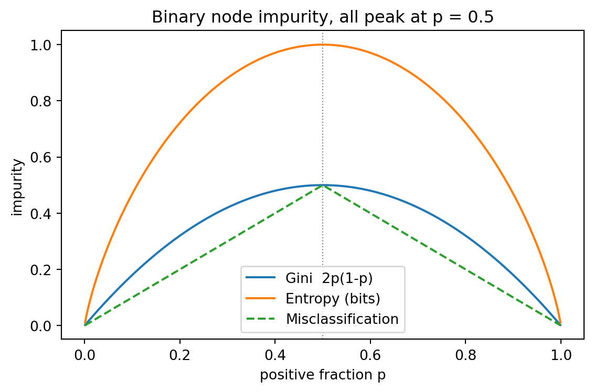
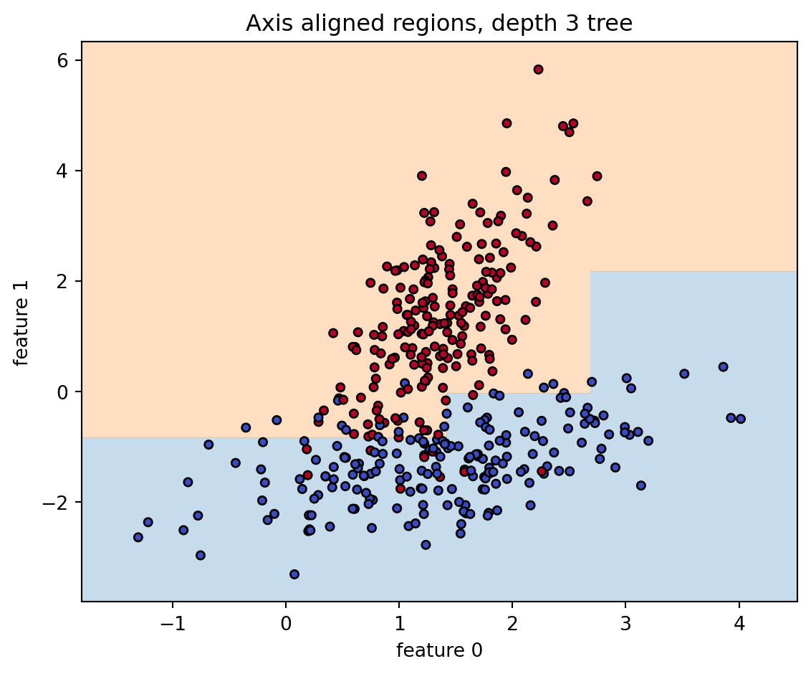
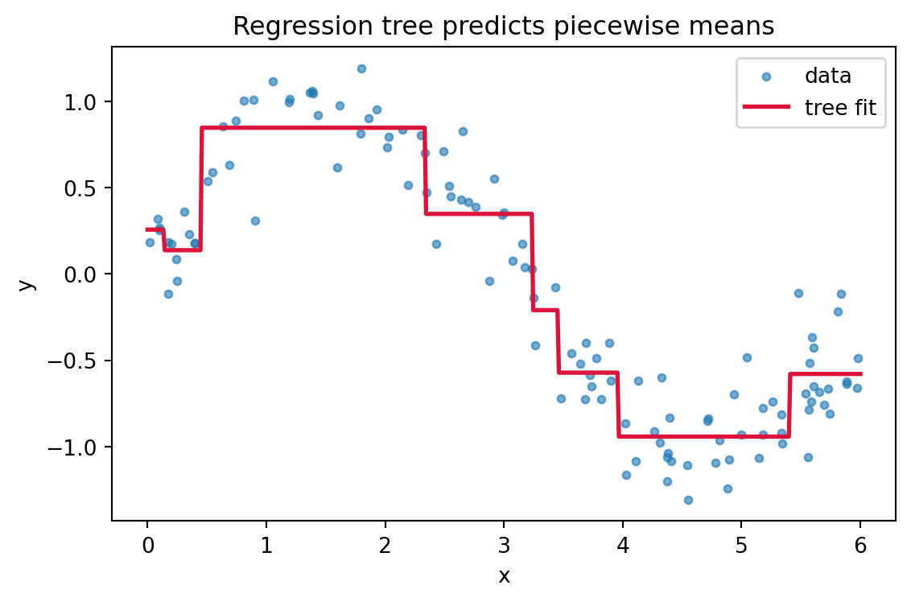

flowchart TD
A[Node with sample set S] --> B{Stopping rule met?}
B -->|max depth, min samples, pure| C[Make leaf, predict mean or majority]
B -->|no| D[Sort each feature, sweep thresholds]
D --> E[Score every split by impurity decrease]
E --> F{Best decrease > 0?}
F -->|no| C
F -->|yes| G[Apply best split]
G --> H[Left child S_L]
G --> I[Right child S_R]
H --> A
I --> A
102 Decision Tree Splitting Criteria
A decision tree partitions the feature space into axis aligned regions and fits a simple constant prediction within each region. The quality of a tree is determined almost entirely by how it chooses to split. This chapter develops the impurity functions and gain measures that drive that choice, contrasts the classification and regression settings, explains how continuous and categorical features are handled, and analyzes the greedy recursive search that assembles a tree one split at a time. The treatment is rigorous enough to justify the formulas and practical enough to guide implementation and debugging.
102.1 1. The Splitting Problem
102.1.1 1.1 Setup and Notation
A supervised training set is a collection of pairs \(\{(x_i, y_i)\}_{i=1}^{n}\) where \(x_i \in \mathbb{R}^d\) (or a mixed space of numeric and categorical fields) and \(y_i\) is a label. In classification, \(y_i \in \{1, \dots, K\}\). In regression, \(y_i \in \mathbb{R}\). A decision tree is a rooted tree in which every internal node holds a test on one feature and every leaf holds a prediction.
A split at a node sends each sample to exactly one child. For a binary split defined by a test, write the node sample set as \(S\) with \(|S| = n\), and the children as \(S_L\) and \(S_R\) with sizes \(n_L\) and \(n_R\). The fractions \(p_L = n_L / n\) and \(p_R = n_R / n\) weight the children.
102.1.2 1.2 Impurity and the Goal of a Split
A node is pure if all its samples agree on the label. Splitting aims to produce children that are purer than the parent. We quantify purity with an impurity function \(I(S)\) that is zero when the node is pure and large when labels are mixed. A good split is one that minimizes the weighted impurity of the children,
\[ I_{\text{children}} = p_L \, I(S_L) + p_R \, I(S_R), \]
or equivalently maximizes the impurity decrease relative to the parent,
\[ \Delta I = I(S) - \big( p_L \, I(S_L) + p_R \, I(S_R) \big). \]
Different choices of \(I\) give the classical criteria. For classification we use Gini impurity and entropy. For regression we use variance. The rest of the chapter studies these in turn.
102.2 2. Gini Impurity
102.2.1 2.1 Definition
Let \(\hat{p}_k\) be the fraction of samples in node \(S\) that belong to class \(k\). The Gini impurity is
\[ G(S) = \sum_{k=1}^{K} \hat{p}_k (1 - \hat{p}_k) = 1 - \sum_{k=1}^{K} \hat{p}_k^{2}. \]
It is bounded between \(0\) and \(1 - 1/K\). The minimum of \(0\) occurs when one class has probability \(1\). The maximum occurs at the uniform distribution \(\hat{p}_k = 1/K\).
To see the maximizer, treat the impurity as a function of the probability vector subject to \(\sum_k \hat{p}_k = 1\) and form the Lagrangian \(\mathcal{L} = 1 - \sum_k \hat{p}_k^2 + \lambda\big(\sum_k \hat{p}_k - 1\big)\). Setting \(\partial \mathcal{L} / \partial \hat{p}_k = -2\hat{p}_k + \lambda = 0\) gives \(\hat{p}_k = \lambda / 2\) for every \(k\), so all class probabilities are equal and the constraint forces \(\hat{p}_k = 1/K\). At that point \(G = 1 - K \cdot (1/K)^2 = 1 - 1/K\), the stated upper bound.
The two equal forms follow from \(\sum_k \hat{p}_k = 1\):
\[ \sum_{k=1}^{K} \hat{p}_k (1 - \hat{p}_k) = \sum_k \hat{p}_k - \sum_k \hat{p}_k^2 = 1 - \sum_{k=1}^{K} \hat{p}_k^{2}. \]
102.2.2 2.2 Interpretation
Gini impurity has a clean probabilistic reading. Suppose we draw a sample at random from the node and independently assign it a label drawn from the node class distribution. The probability of a mismatch is
\[ \sum_{k} \hat{p}_k (1 - \hat{p}_k) = G(S). \]
So Gini measures the expected error of a randomized guess that uses only the class frequencies. A pure node is never wrong under this scheme and has impurity zero.
102.2.3 2.3 Why Gini Is Cheap
Gini avoids logarithms, which made it the default in CART implementations where split search dominates runtime. For a binary problem with positive fraction \(p\), the formula reduces to \(2p(1-p)\), a parabola peaking at \(p = 0.5\). Updating \(\sum_k \hat{p}_k^2\) as a candidate threshold sweeps through sorted values requires only incremental class counts, so the per candidate cost is constant.
102.3 3. Entropy and Information Gain
102.3.1 3.1 Shannon Entropy as Impurity
The entropy of the node label distribution is
\[ H(S) = - \sum_{k=1}^{K} \hat{p}_k \log_2 \hat{p}_k, \]
with the convention \(0 \log_2 0 = 0\), justified by \(\lim_{p \to 0^+} p \log_2 p = 0\). Entropy is measured in bits when the base is \(2\). It is zero for a pure node and maximal at \(\log_2 K\) for the uniform distribution. Entropy answers a coding question: it is the average number of bits needed to encode the class of a sample drawn from the node, under an optimal code tuned to the node frequencies.
The uniform maximizer again follows from a Lagrangian. With \(\mathcal{L} = -\sum_k \hat{p}_k \log_2 \hat{p}_k + \lambda(\sum_k \hat{p}_k - 1)\), the stationarity condition \(\partial \mathcal{L} / \partial \hat{p}_k = -\log_2 \hat{p}_k - \tfrac{1}{\ln 2} + \lambda = 0\) is the same for all \(k\), so all \(\hat{p}_k\) are equal, hence \(\hat{p}_k = 1/K\) and \(H = -\sum_k \tfrac{1}{K}\log_2 \tfrac{1}{K} = \log_2 K\).
102.3.2 3.1a The Bernoulli Case and Its Derivative
For a binary node with positive fraction \(p\) the entropy specializes to the binary entropy
\[ H_2(p) = -p \log_2 p - (1-p)\log_2(1-p). \]
Differentiating,
\[ H_2'(p) = -\log_2 p + \log_2(1-p) = \log_2 \frac{1-p}{p}, \]
which vanishes precisely when \(1 - p = p\), that is at \(p = 1/2\). The second derivative \(H_2''(p) = -\frac{1}{\ln 2}\big(\tfrac{1}{p} + \tfrac{1}{1-p}\big) < 0\) confirms a strict maximum, so a balanced node is the most uncertain and entropy is strictly concave. The symbolic code cell below reproduces this derivative and solves for the maximizer with SymPy.
102.3.3 3.2 Information Gain
Information gain is the impurity decrease using entropy,
\[ IG(S, A) = H(S) - \sum_{v \in \text{values}(A)} \frac{|S_v|}{|S|} \, H(S_v), \]
where \(A\) is the attribute being tested and \(S_v\) is the subset routed to value \(v\). The subtracted term is the conditional entropy \(H(S \mid A)\), so information gain equals the mutual information between the label and the attribute test on the node sample. Choosing the split with the largest information gain greedily reduces label uncertainty. This is the criterion used by ID3 and, with the refinement below, by C4.5.
102.3.4 3.2a A Worked Split Calculation
Take a node of \(14\) samples with \(9\) positives and \(5\) negatives. The parent impurities are
\[ G(S) = 1 - \left(\tfrac{9}{14}\right)^2 - \left(\tfrac{5}{14}\right)^2 = 1 - 0.4133 - 0.1276 = 0.4592, \]
\[ H(S) = -\tfrac{9}{14}\log_2\tfrac{9}{14} - \tfrac{5}{14}\log_2\tfrac{5}{14} = 0.4097 + 0.5305 = 0.9403 \text{ bits}. \]
Consider a candidate split that sends \(8\) samples left (\(6\) positive, \(2\) negative) and \(6\) right (\(3\) positive, \(3\) negative). The child impurities are
\[ G(S_L) = 1 - \left(\tfrac{6}{8}\right)^2 - \left(\tfrac{2}{8}\right)^2 = 0.375, \qquad G(S_R) = 1 - \left(\tfrac{3}{6}\right)^2 - \left(\tfrac{3}{6}\right)^2 = 0.5, \]
\[ H(S_L) = -\tfrac{6}{8}\log_2\tfrac{6}{8} - \tfrac{2}{8}\log_2\tfrac{2}{8} = 0.8113, \qquad H(S_R) = 1.0 \text{ (a balanced node)}. \]
Weighting by \(p_L = 8/14\) and \(p_R = 6/14\), the Gini decrease is
\[ \Delta G = 0.4592 - \left(\tfrac{8}{14}\cdot 0.375 + \tfrac{6}{14}\cdot 0.5\right) = 0.4592 - 0.4286 = 0.0306, \]
and the information gain is
\[ IG = 0.9403 - \left(\tfrac{8}{14}\cdot 0.8113 + \tfrac{6}{14}\cdot 1.0\right) = 0.9403 - 0.8922 = 0.0481 \text{ bits}. \]
The split information of this two way partition is \(SI = -\tfrac{8}{14}\log_2\tfrac{8}{14} - \tfrac{6}{14}\log_2\tfrac{6}{14} = 0.9852\), so the gain ratio is \(GR = 0.0481 / 0.9852 = 0.0488\). Both criteria score the split as a modest improvement; the executable cell verifies every one of these numbers.
102.3.5 3.3 Gini Versus Entropy in Practice
Gini and entropy almost always select the same or very similar splits. Both are strictly concave functions of the class distribution that vanish at the vertices of the probability simplex, which is the property that makes weighted child impurity never exceed the parent impurity. Empirically the two criteria disagree on the chosen split in only a small fraction of nodes, and the downstream accuracy difference is usually negligible. Entropy can be marginally more sensitive to changes near pure nodes because of the logarithm, while Gini is faster. Treat the choice as a minor hyperparameter rather than a modeling decision.
102.4 4. The Bias of Information Gain and Gain Ratio
102.4.1 4.1 Multiway Splits Inflate Gain
Plain information gain has a structural bias toward attributes with many distinct values. Consider a categorical feature that is essentially an identifier, such as a customer id, with a unique value per row. A multiway split on that attribute sends each sample to its own child, every child is pure, the conditional entropy is zero, and the information gain equals the full parent entropy. The split is maximal yet useless, because it memorizes the training set and generalizes to nothing.
102.4.2 4.2 Split Information and the Gain Ratio
C4.5 corrects this with the gain ratio. Define the split information, which is the entropy of the partition sizes themselves,
\[ SI(S, A) = - \sum_{v} \frac{|S_v|}{|S|} \log_2 \frac{|S_v|}{|S|}. \]
Split information is large when an attribute fragments the data into many small parts. The gain ratio normalizes information gain by it,
\[ GR(S, A) = \frac{IG(S, A)}{SI(S, A)}. \]
A high cardinality attribute now pays a penalty proportional to how finely it shatters the node, so a clean two way split on a useful feature can beat a perfect but trivial split on an identifier.
102.4.3 4.3 The Guard Against Tiny Denominators
When an attribute is nearly constant, \(SI(S, A)\) approaches zero and the ratio can explode for a split that carries little real signal. C4.5 applies a standard guard: it computes the average information gain over candidate attributes and only considers the gain ratio for attributes whose information gain is at least that average. This filters out the degenerate small denominator cases before ranking by gain ratio.
candidates = attributes with IG >= mean(IG over all attributes)
best = argmax over candidates of IG / SI102.5 5. Variance Reduction for Regression Trees
102.5.1 5.1 Squared Error Impurity
For a continuous target there is no class distribution, so impurity is measured by spread around the node mean. With node mean \(\bar{y}_S = \frac{1}{n} \sum_{i \in S} y_i\), the node impurity is the mean squared error
\[ I(S) = \frac{1}{n} \sum_{i \in S} (y_i - \bar{y}_S)^2, \]
the variance of the targets in the node. The constant that minimizes squared error within a leaf is exactly the mean: minimizing \(f(c) = \sum_{i \in S}(y_i - c)^2\) gives \(f'(c) = -2\sum_i (y_i - c) = 0\), hence \(c = \frac{1}{n}\sum_i y_i = \bar{y}_S\), which is why regression leaves predict \(\bar{y}_S\). The streaming identity in Section 5.4 follows from expanding the same sum,
\[ \sum_{i \in S}(y_i - \bar{y}_S)^2 = \sum_i y_i^2 - 2\bar{y}_S \sum_i y_i + n\bar{y}_S^2 = \sum_i y_i^2 - \frac{\left(\sum_i y_i\right)^2}{n}, \]
using \(\bar{y}_S = (\sum_i y_i)/n\), so the node SSE depends on the data only through the running count, sum, and sum of squares.
102.5.2 5.2 The Reduction Criterion
A split is scored by the variance reduction, which is the same impurity decrease formula applied to variance,
\[ \Delta = I(S) - \Big( \tfrac{n_L}{n} I(S_L) + \tfrac{n_R}{n} I(S_R) \Big). \]
Maximizing variance reduction is identical to minimizing the total within child sum of squared errors, because the parent term is fixed for a given node. This is the splitting rule used by CART regression trees.
102.5.3 5.3 Robust Alternatives
Squared error is sensitive to outliers because errors are squared. Two robust variants are common. Mean absolute error impurity uses \(\frac{1}{n} \sum_{i} |y_i - m_S|\) where \(m_S\) is the node median, giving leaves that predict the median and resisting heavy tails. Poisson or other deviance criteria are used when the target is a count or a rate, replacing squared error with the deviance of an appropriate distribution. These cost more to evaluate, since the optimal split for absolute error cannot be updated as cheaply as a running sum of squares.
102.5.4 5.4 Streaming the Squared Error
Variance reduction admits an efficient streaming update during a threshold sweep. Track the running count, the running sum \(\sum y\), and the running sum of squares \(\sum y^2\) for the left child. The left sum of squared errors is
\[ \text{SSE}_L = \sum y^2 - \frac{(\sum y)^2}{n_L}, \]
with the right side obtained by subtracting from the parent totals. Each candidate threshold updates these accumulators in constant time, so a full sweep over a sorted feature costs \(O(n)\) after the sort.
102.6 6. Handling Continuous and Categorical Features
102.6.1 6.1 Continuous Features and Threshold Search
A continuous feature is split by a test of the form \(x_j \le t\). To find the best threshold, sort the node samples by feature \(x_j\) and consider thresholds between consecutive distinct values, conventionally the midpoints. There are at most \(n - 1\) candidate thresholds. As the sweep moves a sample from the right child to the left child, the class counts (for Gini or entropy) or the running sums (for variance) update incrementally, so evaluating all thresholds costs \(O(n)\) after the \(O(n \log n)\) sort. Only midpoints where the label or target actually changes can be optimal, which prunes the candidate set further.
sort samples in node by feature x_j
init left counts empty, right counts full
for each sample in sorted order:
move it from right to left
if next value differs:
score split at midpoint via impurity decrease
keep best102.6.2 6.2 Categorical Features
A categorical feature with \(L\) levels can be split in several ways. A multiway split creates one child per level, which is what ID3 and C4.5 do, with the gain ratio guarding against the resulting fragmentation. A binary split partitions the levels into two groups, which is what CART does, but the number of nontrivial binary partitions is \(2^{L-1} - 1\) and grows exponentially.
For binary classification and for regression there is a shortcut that avoids the exponential search. Order the levels by their mean target value (or, for binary classification, by the empirical probability of the positive class), then treat that ordering like a continuous feature and search only the \(L - 1\) thresholds along it. This ordering provably contains an optimal binary partition for these objectives, so the search collapses from exponential to linear in \(L\). For multiclass problems no such exact shortcut exists, and implementations resort to heuristics, one versus rest orderings, or one hot encoding.
102.6.3 6.3 Missing Values
C4.5 handles a missing attribute value by distributing the sample fractionally across the children in proportion to the observed split sizes, and weights its contribution to impurity accordingly. CART style trees instead learn surrogate splits, which are alternate tests on other features that best mimic the primary split, and route a sample with a missing primary value using the best available surrogate. Both approaches let a tree use partially observed rows rather than discarding them.
102.7 7. The Greedy Split Search
102.7.1 7.1 Recursive Partitioning
Trees are built top down by recursive partitioning. At each node the algorithm evaluates every feature and every candidate split on that feature, picks the split with the best impurity decrease, applies it, and recurses on each child. The procedure is greedy: it commits to the locally best split without lookahead.
def build(S):
if stop(S):
return Leaf(prediction(S))
best = argmax over (feature, split) of impurity_decrease(S, feature, split)
if best.decrease <= 0:
return Leaf(prediction(S))
L, R = apply(best, S)
return Node(best, build(L), build(R))102.7.2 7.2 Why Greedy
Finding the globally optimal tree, one that minimizes error subject to a size budget, is NP hard. The number of trees is astronomically large and the optimal split at the root depends on splits made many levels below it. The greedy heuristic trades that intractable optimization for a sequence of local decisions that can each be solved exactly and cheaply. The cost is that greedy trees can miss interactions that only pay off after two coordinated splits, the classic example being an exclusive or pattern where no single feature reduces impurity at the root. Ensembles such as random forests and gradient boosting largely compensate for the greediness by combining many trees, and modern optimal tree solvers can find provably optimal small trees when interpretability demands it.
102.7.3 7.3 Stopping and Complexity Control
Unchecked, recursion continues until every leaf is pure, which overfits. Pre pruning stops growth early using a maximum depth, a minimum number of samples to split a node, a minimum number of samples per leaf, or a minimum impurity decrease threshold. Post pruning grows a full tree and then collapses subtrees that do not earn their complexity. CART uses cost complexity pruning, which minimizes
\[ R_\alpha(T) = R(T) + \alpha \, |\text{leaves}(T)|, \]
where \(R(T)\) is the training error of tree \(T\) and \(\alpha \ge 0\) trades fit against size. Sweeping \(\alpha\) yields a nested sequence of subtrees, and the best \(\alpha\) is selected by cross validation. Post pruning generally beats aggressive pre pruning because it can keep a weak split that enables a strong split beneath it.
102.7.4 7.4 Computational Cost
For a balanced tree the dominant cost is the sorting of features. Each level processes all \(n\) samples across \(d\) features, and there are roughly \(O(\log n)\) levels, giving a typical training cost of \(O(d \, n \log n)\) when feature values are sorted once and the sorted order is maintained as samples are partitioned. Histogram based implementations bin each feature into a fixed number of buckets and replace the per node sort with a single pass over precomputed bins, reducing the inner loop to the number of bins rather than the number of samples. This histogram trick is the engine behind the speed of modern gradient boosting libraries.
102.8 8. Putting the Criteria Together
The splitting criterion is the lens through which a tree sees structure. Gini and entropy measure class impurity and differ only at the margins, with Gini preferred for speed and entropy for its information theoretic reading. Information gain on its own favors high cardinality attributes, and the gain ratio corrects that bias by penalizing fragmentation. Variance reduction extends the same impurity decrease principle to regression, with robust deviance variants available for outliers and counts. Continuous features are split by an \(O(n)\) threshold sweep after sorting, and categorical features by a multiway split or, for binary and regression targets, by an ordered \(L - 1\) threshold search that escapes the exponential partition count. The greedy recursive search assembles these local choices into a tree, trading global optimality for tractability and relying on pruning and ensembling to control the resulting variance. Understanding which impurity function is in play, and what bias it carries, is the key to reading and debugging any tree based model.
102.9 9. Recursive Partitioning at a Glance
The diagram traces the greedy build loop: score every candidate split, take the best impurity decrease, stop if no split helps or a pre pruning limit fires, otherwise recurse into both children.
102.10 10. Computing the Criteria
The following implementations compute Gini, entropy, information gain, gain ratio, and variance reduction directly, then fit scikit-learn trees and visualize impurity curves and learned regions. The Python cell is executable; the Julia and Rust versions mirror its logic for cross language readers.
Code
import numpy as np
import pandas as pd
import matplotlib.pyplot as plt
import sympy as sp
from sklearn.datasets import make_classification
from sklearn.tree import DecisionTreeClassifier, DecisionTreeRegressor
rng = np.random.default_rng(0)
np.random.seed(0)
# --- Impurity functions from first principles ---
def gini(counts):
counts = np.asarray(counts, dtype=float)
n = counts.sum()
if n == 0:
return 0.0
p = counts / n
return 1.0 - np.sum(p ** 2)
def entropy(counts):
counts = np.asarray(counts, dtype=float)
n = counts.sum()
if n == 0:
return 0.0
p = counts[counts > 0] / n
return -np.sum(p * np.log2(p))
def weighted_child(metric, left, right):
nl, nr = sum(left), sum(right)
n = nl + nr
return (nl / n) * metric(left) + (nr / n) * metric(right)
# --- Worked example from the text: 9 positive, 5 negative ---
parent = [9, 5]
left, right = [6, 2], [3, 3]
G_parent, H_parent = gini(parent), entropy(parent)
dG = G_parent - weighted_child(gini, left, right)
IG = H_parent - weighted_child(entropy, left, right)
def split_information(left, right):
nl, nr = sum(left), sum(right)
n = nl + nr
p = np.array([nl / n, nr / n])
return -np.sum(p * np.log2(p))
SI = split_information(left, right)
GR = IG / SI
print("Worked split (9 pos / 5 neg) -> L(6,2) R(3,3)")
print(f" Gini parent = {G_parent:.4f}")
print(f" Entropy parent= {H_parent:.4f} bits")
print(f" Gini decrease = {dG:.4f}")
print(f" Info gain = {IG:.4f} bits")
print(f" Split info = {SI:.4f}")
print(f" Gain ratio = {GR:.4f}")
# --- SymPy: derivative of binary entropy maximized at p = 1/2 ---
p = sp.symbols('p', positive=True)
H2 = -p * sp.log(p, 2) - (1 - p) * sp.log(1 - p, 2)
dH2 = sp.simplify(sp.diff(H2, p))
maximizer = sp.solve(sp.Eq(dH2, 0), p)
print("\nSymPy check on binary entropy:")
print(f" dH2/dp = {dH2}")
print(f" maximizer p* = {maximizer}")
# --- Compare Gini vs entropy splits on a real threshold sweep ---
X, y = make_classification(n_samples=400, n_features=2, n_redundant=0,
n_clusters_per_class=1, class_sep=1.3,
random_state=0)
feat = X[:, 0]
order = np.argsort(feat)
fs, ys = feat[order], y[order]
records = []
for i in range(1, len(fs)):
if fs[i] == fs[i - 1]:
continue
thr = 0.5 * (fs[i] + fs[i - 1])
lmask = feat <= thr
lc = [np.sum(y[lmask] == 0), np.sum(y[lmask] == 1)]
rc = [np.sum(y[~lmask] == 0), np.sum(y[~lmask] == 1)]
records.append({
"threshold": thr,
"gini_decrease": gini(parent_counts := [np.sum(y == 0), np.sum(y == 1)]) - weighted_child(gini, lc, rc),
"info_gain": entropy([np.sum(y == 0), np.sum(y == 1)]) - weighted_child(entropy, lc, rc),
})
sweep = pd.DataFrame(records)
best_gini = sweep.loc[sweep["gini_decrease"].idxmax()]
best_entropy = sweep.loc[sweep["info_gain"].idxmax()]
compare = pd.DataFrame({
"criterion": ["gini", "entropy"],
"best_threshold": [best_gini["threshold"], best_entropy["threshold"]],
"score": [best_gini["gini_decrease"], best_entropy["info_gain"]],
})
print("\nBest split on feature 0 by criterion:")
print(compare.to_string(index=False))
# --- Figure 1: impurity curves for a binary node ---
pp = np.linspace(0.001, 0.999, 400)
gini_curve = 2 * pp * (1 - pp)
ent_curve = -pp * np.log2(pp) - (1 - pp) * np.log2(1 - pp)
err_curve = 1 - np.maximum(pp, 1 - pp)
fig, ax = plt.subplots(figsize=(6, 4))
ax.plot(pp, gini_curve, label="Gini 2p(1-p)")
ax.plot(pp, ent_curve, label="Entropy (bits)")
ax.plot(pp, err_curve, label="Misclassification", linestyle="--")
ax.axvline(0.5, color="grey", linewidth=0.8, linestyle=":")
ax.set_xlabel("positive fraction p")
ax.set_ylabel("impurity")
ax.set_title("Binary node impurity, all peak at p = 0.5")
ax.legend()
fig.tight_layout()
plt.show()
# --- Figure 2: decision regions of a fitted classification tree ---
clf = DecisionTreeClassifier(max_depth=3, criterion="gini", random_state=0).fit(X, y)
xx, yy = np.meshgrid(np.linspace(X[:, 0].min() - 0.5, X[:, 0].max() + 0.5, 300),
np.linspace(X[:, 1].min() - 0.5, X[:, 1].max() + 0.5, 300))
Z = clf.predict(np.c_[xx.ravel(), yy.ravel()]).reshape(xx.shape)
fig, ax = plt.subplots(figsize=(6, 5))
ax.contourf(xx, yy, Z, alpha=0.25, levels=[-0.5, 0.5, 1.5], colors=["#1f77b4", "#ff7f0e"])
ax.scatter(X[:, 0], X[:, 1], c=y, edgecolor="k", s=18, cmap="coolwarm")
ax.set_xlabel("feature 0")
ax.set_ylabel("feature 1")
ax.set_title("Axis aligned regions, depth 3 tree")
fig.tight_layout()
plt.show()
# --- Figure 3: regression tree as a step function (variance reduction) ---
xr = np.sort(rng.uniform(0, 6, 120))
yr = np.sin(xr) + rng.normal(0, 0.2, xr.shape)
reg = DecisionTreeRegressor(max_depth=3, random_state=0).fit(xr.reshape(-1, 1), yr)
grid = np.linspace(0, 6, 500).reshape(-1, 1)
fig, ax = plt.subplots(figsize=(6, 4))
ax.scatter(xr, yr, s=12, alpha=0.6, label="data")
ax.plot(grid, reg.predict(grid), color="crimson", linewidth=2, label="tree fit")
ax.set_xlabel("x")
ax.set_ylabel("y")
ax.set_title("Regression tree predicts piecewise means")
ax.legend()
fig.tight_layout()
plt.show()
print(f"\nRegression tree leaves predict constant means; depth = {reg.get_depth()}, leaves = {reg.get_n_leaves()}")Worked split (9 pos / 5 neg) -> L(6,2) R(3,3)
Gini parent = 0.4592
Entropy parent= 0.9403 bits
Gini decrease = 0.0306
Info gain = 0.0481 bits
Split info = 0.9852
Gain ratio = 0.0488
SymPy check on binary entropy:
dH2/dp = log((1 - p)/p)/log(2)
maximizer p* = [1/2]
Best split on feature 0 by criterion:
criterion best_threshold score
gini 0.59156 0.038836
entropy 0.59156 0.060856


Regression tree leaves predict constant means; depth = 3, leaves = 8# Impurity functions and the worked split from the text.
using Printf
gini(counts) = (n = sum(counts); n == 0 ? 0.0 : 1.0 - sum((counts ./ n) .^ 2))
function entropy(counts)
n = sum(counts)
n == 0 && return 0.0
p = filter(>(0), counts ./ n)
-sum(p .* log2.(p))
end
function weighted_child(metric, left, right)
nl, nr = sum(left), sum(right)
n = nl + nr
(nl / n) * metric(left) + (nr / n) * metric(right)
end
parent = [9, 5]; left = [6, 2]; right = [3, 3]
dG = gini(parent) - weighted_child(gini, left, right)
IG = entropy(parent) - weighted_child(entropy, left, right)
function split_information(left, right)
nl, nr = sum(left), sum(right)
n = nl + nr
p = [nl / n, nr / n]
-sum(p .* log2.(p))
end
SI = split_information(left, right)
@printf("Gini decrease = %.4f\n", dG)
@printf("Info gain = %.4f bits\n", IG)
@printf("Gain ratio = %.4f\n", IG / SI)// Impurity functions and the worked split from the text.
fn gini(counts: &[f64]) -> f64 {
let n: f64 = counts.iter().sum();
if n == 0.0 { return 0.0; }
1.0 - counts.iter().map(|&c| (c / n).powi(2)).sum::<f64>()
}
fn entropy(counts: &[f64]) -> f64 {
let n: f64 = counts.iter().sum();
if n == 0.0 { return 0.0; }
-counts.iter()
.filter(|&&c| c > 0.0)
.map(|&c| { let p = c / n; p * p.log2() })
.sum::<f64>()
}
fn weighted_child(metric: fn(&[f64]) -> f64, left: &[f64], right: &[f64]) -> f64 {
let nl: f64 = left.iter().sum();
let nr: f64 = right.iter().sum();
let n = nl + nr;
(nl / n) * metric(left) + (nr / n) * metric(right)
}
fn split_information(left: &[f64], right: &[f64]) -> f64 {
let nl: f64 = left.iter().sum();
let nr: f64 = right.iter().sum();
let n = nl + nr;
let p = [nl / n, nr / n];
-p.iter().map(|&v| v * v.log2()).sum::<f64>()
}
fn main() {
let parent = [9.0, 5.0];
let left = [6.0, 2.0];
let right = [3.0, 3.0];
let dg = gini(&parent) - weighted_child(gini, &left, &right);
let ig = entropy(&parent) - weighted_child(entropy, &left, &right);
let si = split_information(&left, &right);
println!("Gini decrease = {:.4}", dg);
println!("Info gain = {:.4} bits", ig);
println!("Gain ratio = {:.4}", ig / si);
}102.11 References
- Breiman, L., Friedman, J., Olshen, R., and Stone, C. Classification and Regression Trees. Wadsworth, 1984. https://doi.org/10.1201/9781315139470
- Quinlan, J. R. Induction of Decision Trees. Machine Learning, 1986. https://doi.org/10.1007/BF00116251
- Quinlan, J. R. C4.5: Programs for Machine Learning. Morgan Kaufmann, 1993. https://dl.acm.org/doi/book/10.5555/152181
- Hastie, T., Tibshirani, R., and Friedman, J. The Elements of Statistical Learning, 2nd ed. Springer, 2009. https://hastie.su.domains/ElemStatLearn/
- Mitchell, T. Machine Learning. McGraw Hill, 1997. https://www.cs.cmu.edu/~tom/mlbook.html
- scikit-learn developers. Decision Trees: Mathematical Formulation. https://scikit-learn.org/stable/modules/tree.html
- Ke, G., et al. LightGBM: A Highly Efficient Gradient Boosting Decision Tree. NeurIPS, 2017. https://papers.nips.cc/paper/2017/hash/6449f44a102fde848669bdd9eb6b76fa-Abstract.html
- Bertsimas, D., and Dunn, J. Optimal Classification Trees. Machine Learning, 2017. https://doi.org/10.1007/s10994-017-5633-9